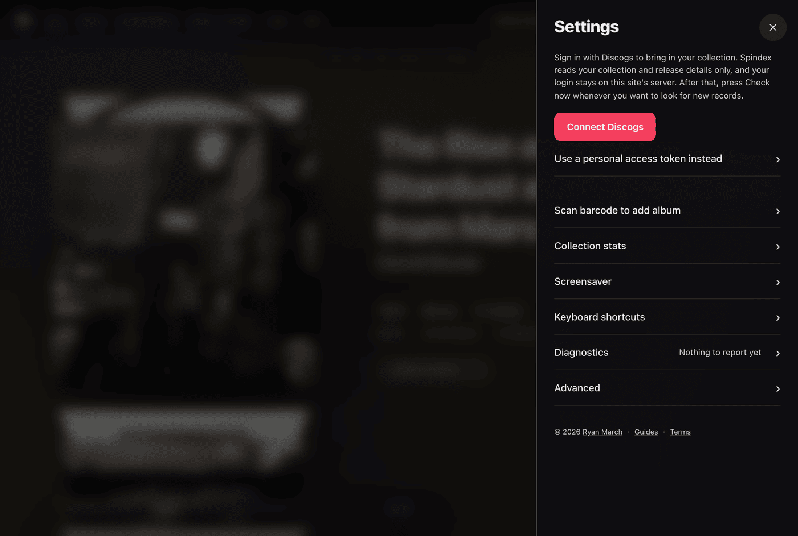

Getting Started with Spindex
Spindex gives you a tactile, visual record crate in your browser backed by your Discogs collection.
Everything is built to work immediately on desktop computers, tablets, and phones. Your records save locally in your browser storage so you can dig through your crate wherever you are, even when offline.
The Demo Crate
When you first launch Spindex, you do not need to sign in or set up an account right away. Spindex preloads a curated 12-album demo collection so you can flip through records, open gatefold sleeves, test views, and try keyboard shortcuts immediately.
A banner at the top of the crate indicates when you are exploring demo data. Tapping this banner opens the connection drawer so you can import your own collection whenever you are ready.
If you want to return to the demo crate later to test features, append ?demo to the website address in your browser.
Connecting Your Discogs Account
Bringing your collection into Spindex takes just a few clicks:
- Click the gear icon in the top header to open Settings.
- Under the Discogs section, click Connect Discogs.
- You will be directed to Discogs to authorize read-only access to your collection.
- Once approved, you return to Spindex and your collection begins importing automatically.
Spindex reads only your collection releases, master details, and artist credits. Your login credentials remain secure and are never shared.

Checking for New Records
Spindex operates on-demand to protect your battery life and respect API rate limits. It does not run background sync processes.
Whenever you add new vinyl to your Discogs collection:
- Open Settings.
- Click Check now.
- Spindex looks for releases added since your last check and adds them to your crate.
The settings panel displays a timestamp indicating the last time your collection was checked.
Offline Browsing
Once your collection loads, the record details, artwork references, and tracklists reside in your browser's local database.
You can bookmark Spindex, install it to your home screen or dock as a progressive web application, and flip through your crate on a flight or in locations without an active internet connection.